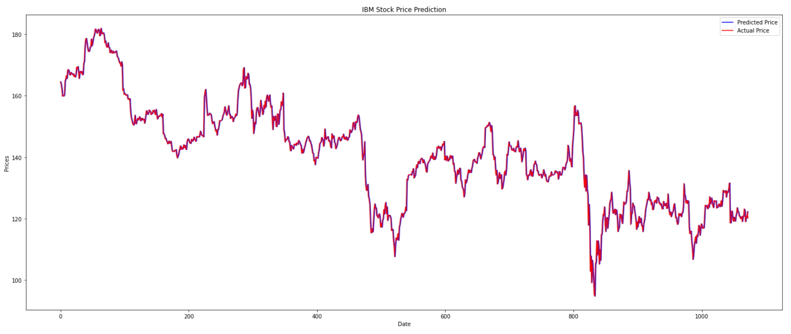
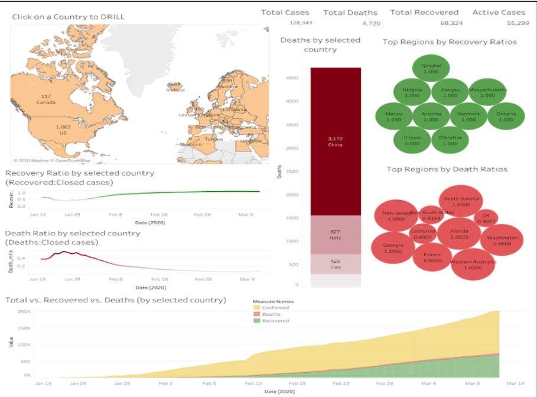
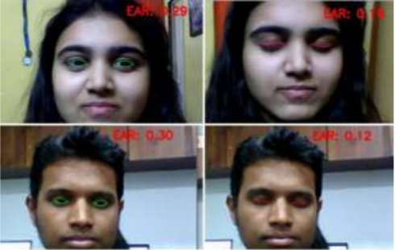
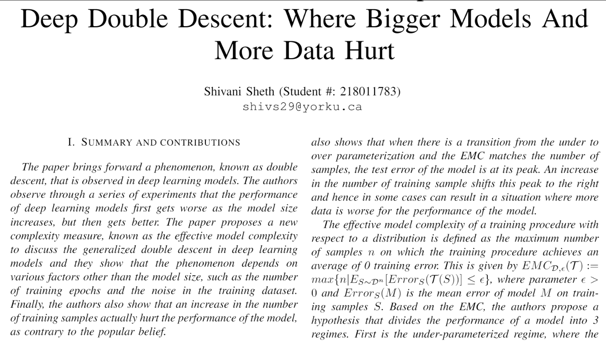
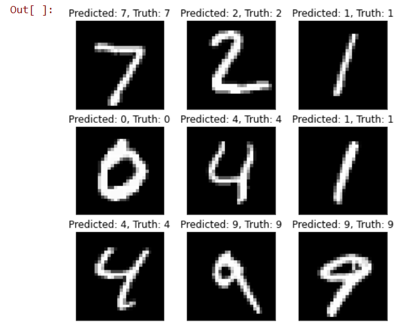
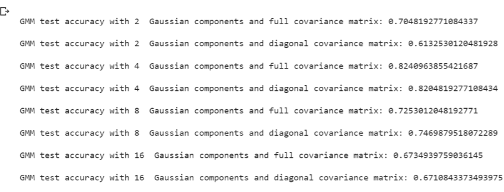
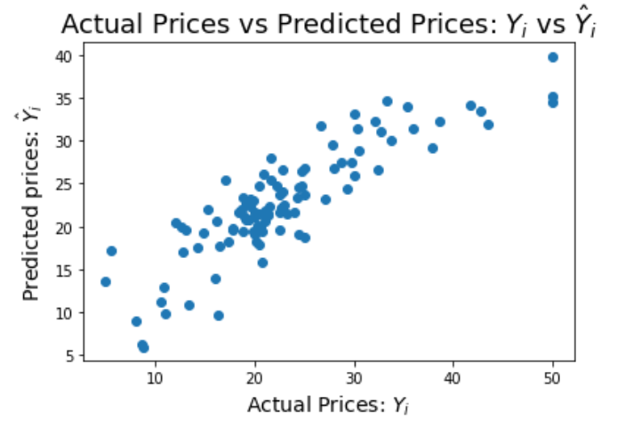
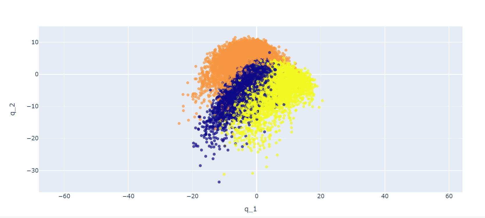
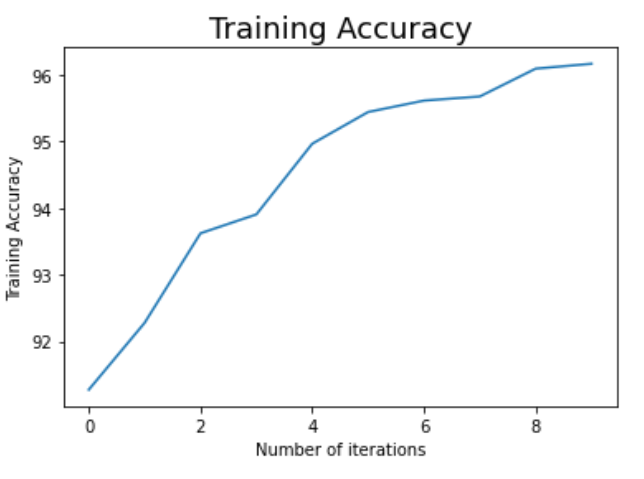
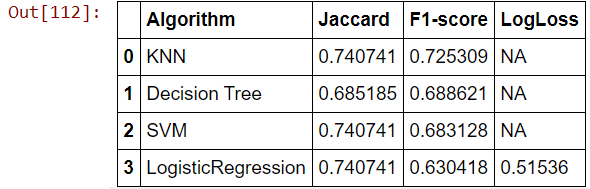

Stock Price Prediction using Machine Learning and Deep Learning models

Description:
Predicted and evaluated the IBM stock price of the past 3 years using a dataset conisting of IBM stock prices of the past 17 years. The prices are predicted using machine learning models such as Linear Regression, Long Short-Term Memory Networks, and Autoregressive integrated moving average(ARIMA) models, and a comparison is made between the working and results of each model. The results show that the prices were most accurately predicted by the ARIMA model with a root mean squared error of 0.05, followed by LSTM with a root mean squared error of 1. Linear Regression performs the worst among all three models with a root mean squared error of 51.
Project Links:
Github Repository: Stock-Price-Prediction
Project Code: Stock Price Prediction Code
Analyze & Cluster British Columbia Neighborhoods

Description:
Scrapped, analyzed, clustered the British Columbia neighborhoods according to their top 5 venues using Foursquare API, K-means in Python.
Leveraged Foursquare API to find the most popular places in each of the neighborhoods consisting of British Columbia. A place is marked as “happening” by the Foursquare API according to the number of people present at a given place and hence the place is updated in real-time; it might change every few minutes. We then cluster the neighborhoods based upon their preferred places in the surrounding area. This will give a clear picture of the ambience of the place, which can help an individual know what to expect in the neighborhood, and hence decide upon a suitable location according to their preference. Then, we compare the clusters with the neighborhood clustes in Toronto, which is another widely preferred city among prospective students, and brief upon the similarities and dissimilarities based upon its neighborhood.
Project Links:
Github Repository: Analyze-and-Cluster-British-Columbia-Neighborhoods
Project Code: Code - Analyze-and-Cluster-British-Columbia-Neighborhoods
Project Report: Report - Analyze-and-Cluster-British-Columbia-Neighborhoods
Project Presentation: Presentation - Analyze-and-Cluster-British-Columbia-Neighborhoods
COVID 19 Dashboard

Description:
Created a Dashboard on COVID 19 using Tableau based on the CSSE COVID-19 Dataset from John Hopkins University on GitHub. The dashboard is interactive, where a user can click on a country and the information on all other charts is drilled down according to the chosen country.
Visualized 7 Key Performance Indicators, including active cases, death rate, total confirmed cases, highly infected countries, recovered cases, etc. between the countries and composed a detailed report describing the information extracted from the graphs, its tools and properties used.
Overview of different charts that constitute the dashboard are: World Map (drills down information country wise), Bar Chart (shows the total number of deaths in the country), Line Charts (shows the total death and the total recovered ratios of the country), Area Chart (displays the confirmed cases, the deaths, and the recovered cases of the given country), Mixed Chart (plots the total number of deaths/ recovered cases for different countries), and a Pie Chart (displays the number of confirmed cases in highly infected countries).
Project Links:
Github Repository: COVID-19-Dashboard
Tableau Dashboard: COVID 19 Dashboard
Analytical Report:COVID 19 Report
Driver Drowsiness Detection System using Machine Learning Algorithms

Description:
First author of a paper that monitors and detects driver drowsiness, based on the eyes of a driver, through a real-time video..
Implemented a drowsiness detection system using machine learning algorithms to alarm a driver in real-time to prevent a collision. The model uses the Haar Cascade algorithm, along with the OpenCV library to monitor each frame of the real-time video, which helps to recognize the state of the driver. Furthermore, a Raspberry Pi single-board computer, combined with a camera module and an alarm system, facilitates the project to emulate a compact drowsiness detection system suitable for different automobiles.
The model uses eye-aspect-ratio (EAR) to compute the ratio between the vertical and the horizontal distance of the eyes to determine if the eyes are open or closed. Haar Cascades are used in this project to detect the face and the eyes from the real-time video captured by the camera using the data from the face_landmarks DAT file. Once the eyes are detected in real-time, their EAR is computed. If the value for each frame, is computed to be less than the threshold value, then a boolean is set to 'TRUE' to indicate that the eyes are closed. If the boolean value is TRUE for consecutive 5 frames, the driver is detected to be drowsy by the system.
Project Links:
Github Repository: Driver-drowsiness-detection-system
Project Code: Code - Driver Drowsiness Detection System
Paper Published (First Author): Journal Paper - Driver Drowsiness Detection System
DNN Personification
Description:
The project reproduces two research papers and extends the results beyond the scope of the paper. Paper [1] deals with local style transfer of the facial features from source image to destination image. Paper [2] deals with simultaneous transfer of the facial features from source to target image with multiple domains, targeting multiple facial features in one go. In order to reproduce both the papers, we implemented the basic functions of GANs. Since both the papers belong to the same domain, i.e. both of them are dependent on the StyleGAN for facial feature transfer, we tend to reproduce these basic GAN functions in order to get the desired results claimed by the papers.
My contribution: Reproduce paper[2] by implementing components of StarGAN, namely the mapping network, the noise injection, the Truncation method, progressive growing, and adaptive instance normalization (AdaIN), to apply the facial feature mappings between 3 pictures. Additionally, I extended the results of facial feature transfer to a GIF, which was further converted to a video.
Project Links:
Github Repository: DNN-Personification
YouTube video: DNN Personification Explanation Video
Project Code for Paper 1: Code: StyleGAN
Project Code for Paper 2: Code: StarGANv2
Project Report: Report - DNN Personification
Deep Learning Research Paper Reviews

Description:
This includes my reviews on research papers in several domains including Natural Language Processing, Generative Adversarial Networks, Hyperparameters, Neural Network Architectures, Optimization, Normalizing Flows, etc.
Project Links:
Github Repository: Research-Paper-Reviews
Research Papers: Research Papers
Convolutionl Neural Networks for MNIST using Keras

Description:
Implemented a convolutional neural network on the MNIST dataset to classify the digits from 0 to 9. Uses the ’keras’ library to implement the forward and backward passes of the convolutional neural network. Built a model using 3 Conv2D layers, each of size (3 × 3) with 32, 64, and 64 kernels respectively. Used the MaxPooling2D layer of size (2 × 2) followed by a flatten layer to input into the fully connected layers. Finally, passed the data through 3 ’Dense’ layers in keras, which correspond to the 2 fully connected layers of size 7744 and 128 neurons respectively and one softmax layer having 10 neurons, with each neuron corresponding to one class label (here digit) in MNIST.
Compiled the model using the ’Adam’ optimizer and 'sparse_categorical_crossentropy' loss, which produces a category index of the most likely matching category as compared to the one-hot array containing the probable match for each category produced by the 'categorical_crossentropy' loss.
Trained the model 60,000 training images along with its corresponding labels, and evaluated the predictions against 10,000 testing images along with its corresponding labels. The model was run for about 5 epochs and achieved an accuracy of 0.9951 on the training data, and an accuracy of 0.9885 on the test data
Project Links:
Github Repository: Convolutional-Neural-Nets-for-MNIST-using-Keras
Project Code: CNN for MNIST
Gaussian Models from scratch

Description:
In this project, we create and compare two Gaussian based models, namely Multivariate Gaussian models and Gaussian Mixture Models.
Multivariate Gaussian models: Implemented a simple classifier using multivariate Gaussian models. Each class in the data is modeled by a single 3D Gaussian distribution and two different structures for the covariance matrices are considered for the model, which are: Each Gaussian uses a diagonal covariance matrix and Each Gaussian uses a full covariance matrix.
Gaussian Mixture Models: Improved the Gaussian classifier from the multivariate Gaussian model by using a Gaussian Mixture Model to model each class. Further, investigated the Gaussian Mixture Models that have 2, 4, 8, or 16 Gaussian components and determine the best model configuration in terms of the number of Gaussian components and the covariance matrix structure (diagonal vs. full) for the given data set.
Project Links:
Github Repository: Gaussian-models-from-scratch
Project Code: Code - Multivariate Gaussian models and Gaussian Mixture Models from scratch
Dataset: Data - Gaussian models from scratch
Results: Results - Gaussian models from scratch
Linear, Ridge, LASSO Regression

Description:
Implemented Linear Regression, Ridge Regression, and LASSO algorithms on a small data set, e.g. the Boston Housing Dataset (https://scikit-learn.org/stable/modules/generated/sklearn.datasets. load_boston.html), and compare the performance of each algorithm.
Project Links:
Github Repository: Linear-Ridge-LASSO-Regression
Project Code: Code - Linear Ridge LASSO Regression
Project Results: Results - Linear Ridge LASSO Regression
PCA and LDA from scratch

Description:
Principal Component Analysis: Implemented Principal Component Analysis (PCA) on all training images of three digits (‘4’, ‘7’ and ‘8’) in MNIST to estimate the projection matrices of PCA, and then plotted the total distortion error of these images as a function of the used PCA dimensions (such as 2, 10, 50, 100, 200, 300).
Linear Discriminant Analysis: Implemented Linear Discriminant Analysis (LCA) on all training images of three digits (‘4’, ‘7’ and ‘8’) to estimate the projection matrices of LCA for all possible LDA dimensions.
Project Links:
Github Repository: PCA_LDA_from_scratch
Project Code: Code - PCA LDA from scratch
Project Results: Results - PCA LDA from scratch
Fully Connected Neural Networks from scratch

Description:
Used the MNIST data set and implement the forward and backward passes for fully-connected deep neural networks from scratch.
Built a model with 2 hidden layers given by Network([784, 30, 30, 10]) where the first parameter is the dimension of the input data and hence the first layer is the input layer, the second and third layers correspond to the hidden layers with 30 neurons each, and the fourth layer corresponds to the output layer with 10 nodes corresponding to the 10 class labels. Implement the sgd function from scratch which creates mini batches for the data and passes to the ’update mini batch’ function. The update mini batch function initiates backpropagation for each data point in the mini batch and updates the weights and biases of the network. The error and accuracy are calculated in the sgd function and are printed with respect to each epoch. Hyperparameter: learning rate = 1.0, the batch size = 10, and the number of epochs were restricted to 10 for faster training of the model.
The results for the model were achieved as given below where we obtain an accuracy of 95% on the train data and 94% on the test data.
Project Links:
Github Repository: Fully-Connected-Neural-Nets-from-scratch
Project Code: Code - FNN from scratch
Project Results: Results - FNN from scratch
Compare Classification Methods with Python

Description:
Applied different classification methods on a common dataset and compared the accuracy of each classifier.
Dataset: Loan Applications.
Classification Algorithms Used: k-Nearest Neighbour, Decision Tree, Support Vector Machine, Logistic Regression.
Metrics used to calculate accuracy: Jaccard index, F1-score, LogLoss
Project Links:
Github Repository: Compare-Classification-methods-with-Python
Project Code: Code - Compare Classification Methods with Python
Face and Object Recognition
Description:
Implemented a face and object detection code that is run in Jupyter notebook/ Spyder using TensorFlow and OpenCV libraries in Python.
Project Links:
Github Repository: Face-and-object-recognition
Project Code: Code - Face and Object Recognition
IBM Data Science Professional Certificate
Description:
Successfully completed courses such as Python for Data Science and AI, Machine Learning, Databases and SQL for Data Science, Data Analysis, and Data Visualization as a part of the Specialization, which helped me build a strong foundation for data processing and analytics.
Analyzed various real-world data sets such as predicting car prices (classification), customer segmentation and neighborhood similarities (clustering), and recommendation systems, among a few others.
Project Links:
Github Repository: IBM-Data-Science-Professional-Certificate
Blood Bank Management System
Description:
Developed a browser-based system that is designed to store, retrieve and analyze information concerned with the administrative management within a blood bank. It is integrated with the SQL database on XAMPP to access and store details of the blood donors, recipients, hospitals where the blood has been sent to, different blood groups available in stock within the blood bank and those out of stock. The administer can also search for blood-group specific donors by which the contact details of previously visited donors having the blood group will be provided. HTML, CSS, JavaScript are used to design the web pages and PHP has been used to link the front end to the back end.
Project Links:
Github Repository: PHP-Bloodbank-Management-System